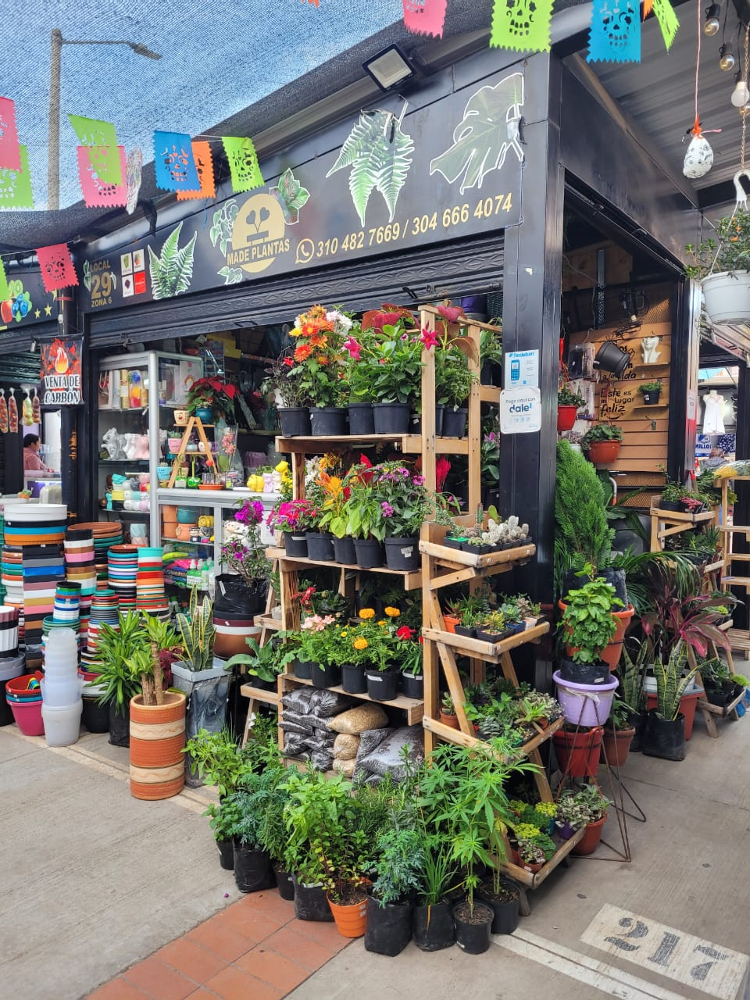

Sobre Nosotros
En Made plantas, creemos que las plantas son el alma de cualquier espacio. Fundados por un equipo de apasionados de la jardinería y la sostenibilidad, nuestro objetivo es llevar un pedacito de naturaleza a cada hogar y oficina. Nos comprometemos a ofrecer una experiencia única que no solo embellece, sino que también educa y fomenta el bienestar. Nuestra misión es crear un vínculo entre las personas y las plantas, ayudando a todos a descubrir los beneficios de incorporar la naturaleza en su vida diaria.
¿Qué Ofrecemos?
Variedad de Plantas: Desde suculentas y plantas de aire hasta exuberantes helechos y árboles pequeños, tenemos la planta perfecta para cada rincón.
Accesorios de jardineria: Disponemos de macetas, herramientas y fertilizantes orgánicos para que cuides de tus plantas con los mejores productos.
Atención al Cliente: Nuestro personal está siempre dispuesto a ofrecerte la mejor experiencia de compra. Nos esforzamos por ofrecer un servicio personalizado que se ajuste a tus necesidades.
¿Dónde Estamos?
Nos encontramos en la Galería Comercial de Ciudad Verde, Carrera 32 # 15-154, local 29 Zona 6, Soacha, donde podrás explorar nuestra selección de plantas y recibir consejos de nuestro equipo experto.
Contáctanos
Teléfono: +57 310 482 7669
Teléfono: +57 304 666 4074